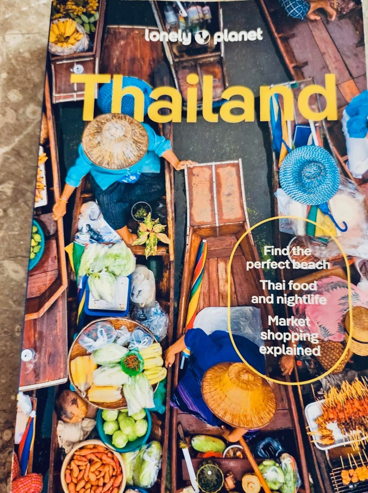
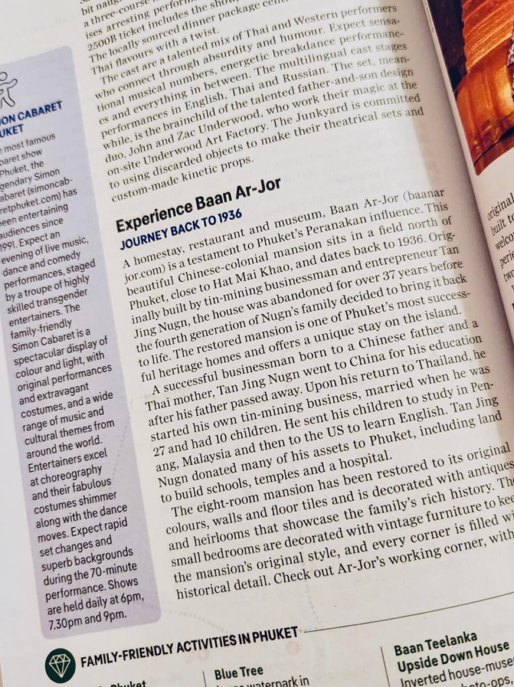
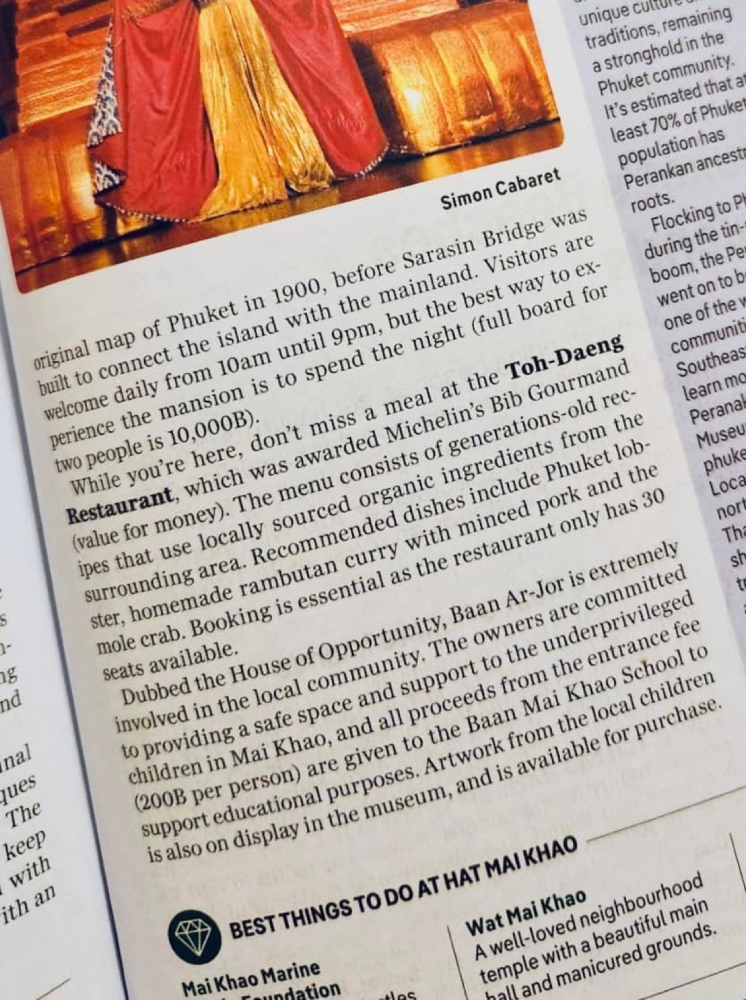

2024 · venture · event
Baan Ar-Jor gets a two-page feature in Lonely Planet Thailand



Original text in Thai
สำเร็จๆๆๆ แล้ววว 😇🎉
ทุกๆ วันจะไปขอพรพระพิฆเนศปางสุขสมปรารถนาหน้าบ้าน ซักวันนึง #บ้านอาจ้อ และ #ร้านโต๊ะแดง ต้องเป็นแลนด์มาร์คในโซนไม้ขาวของภูเก็ตให้ได้ อย่างน้อยก็ขอให้ นทท ทุกคน ที่มาเยี่ยมเยียนภูเก็ตทุกคน ได้เข้ามาแวะชมซักครั้ง ❤️
มาวันนี้เพิ่งรู้ตัว ลูกค้าบอกบ้านอาจ้อตีพิมพ์อยู่ใน #lonelyplanet ของประเทศไทยไปแล้ว ไม่ได้แค่คอลัมน์เล็กๆ แต่ซัดไป 2 หน้าเลย 🥰
ขอบคุณทีมงานและลูกค้าทุกคนที่เอ็นดู ช่วยสนับสนุนบ้านอาจ้อ ร้านอาหารโต๊ะแดง มาไกลถึงวันนี้ 😇🎉
วันหน้ายังไม่รู้จะมีอะไรเกิดขึ้นอีก แต่สัญญาว่า งานอะไรที่ตั้งใจทำโดยทีมบ้านอาจ้อนี้ งานต้องดี ทีมงานและลูกค้ามีความสุข และช่วยเหลือเกื้อกูลกับคนรอบข้าง ❤️✨
#longdaeng ✨
#tohdaeng 🧧
#บ้านอาจ้อ ❤️